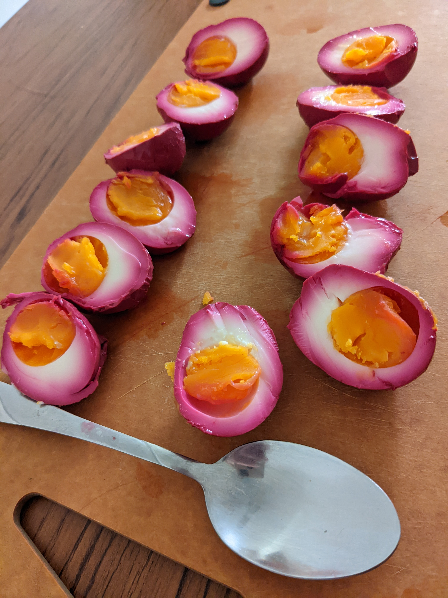

Purple Pickled Eggs

These beautiful and tasty eggs are sure to delight even the pickiest eater! They last in the fridge for 2 weeks and make a great snack.
Servings: 3-4
Time: 1 day
Ingredients
- 2 beets
- 4 cups white vinegar
- 1/2 cup sugar
- 1 cup salt
- 9 eggs
Steps
- Hard boil and peel the eggs.
- Add beets, vinegar, sugar and salt to pot and bring to boil
- Cook mixture for 15 minutes.
- Remove the beets and enjoy as a quick snack
- Place the eggs in a glass jar, pour the vinegar mixture on top and seal.
- Refrigerate jar for at least one day.
- Enjoy!
Home